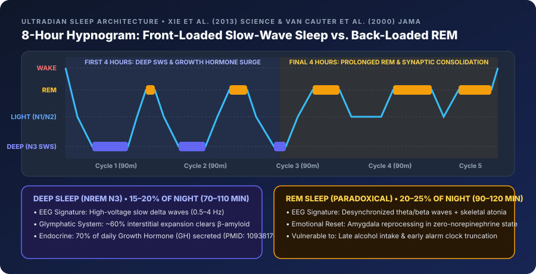
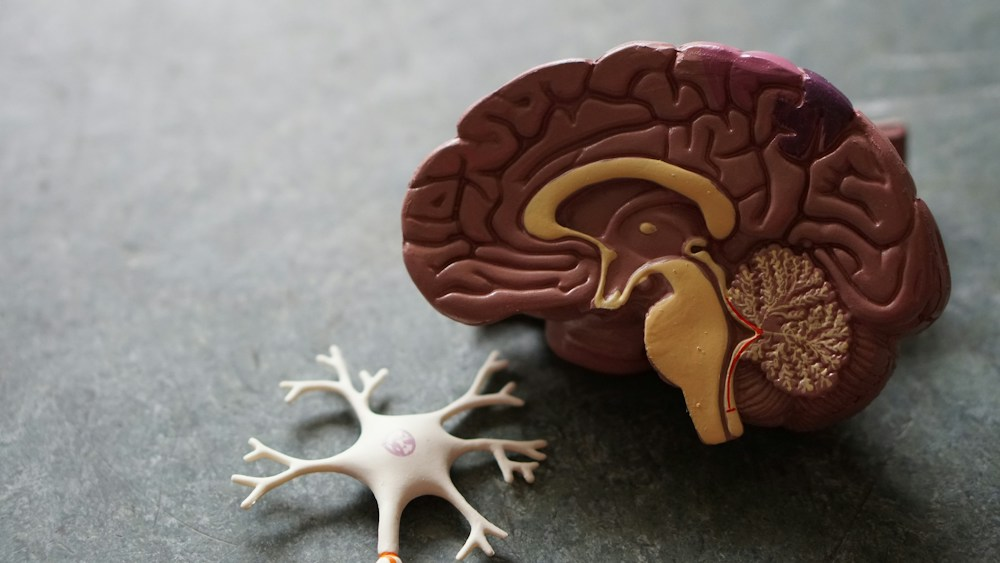

Executive Clinical Summary
Human sleep is not a uniform state of passive unconsciousness. Instead, the brain orchestrates a highly dynamic, metabolically active progression through 90- to 110-minute ultradian cycles, alternating between Non-Rapid Eye Movement (NREM) and Rapid Eye Movement (REM) sleep.
While Light Sleep (Stages N1 and N2) serves as an essential bridge occupying roughly 50%–55% of the night, peak human performance hinges on two specialized restorative stages: Deep Sleep (Stage N3 Slow-Wave Sleep) and REM Sleep (Paradoxical Sleep). Although both are indispensable, they serve radically different biological, endocrine, and neurological functions—and occur at opposite ends of the night.
1. Deep Sleep (Stage N3 / Slow-Wave Sleep): Physical & Glymphatic Restoration
During Stage N3 Deep Sleep, the thalamocortical network synchronizes into high-voltage, slow-frequency Delta brainwaves ($0.5–4.0\text{ Hz}$). Heart rate and respiratory rate drop to their lowest nocturnal levels, parasympathetic vagal tone peaks, and skeletal muscles relax completely.
A. The Glymphatic Brain-Washing System (Xie et al., 2013, Science)
In a landmark 2013 study published in Science (PMID: 24136970), Dr. Maiken Nedergaard and colleagues at the University of Rochester discovered the brain's glymphatic system. Using two-photon imaging, they demonstrated that during Slow-Wave Sleep:
* Glial cells shrink, causing the interstitial space between neurons to expand by ~60%.
* Cerebrospinal fluid (CSF) rushes through aquaporin-4 (AQP4) water channels along paravascular pathways, increasing convective clearance of metabolic neurotoxins—including amyloid-$\beta$ plaques and tau proteins associated with Alzheimer's disease—by 10- to 20-fold compared to wakefulness.
B. The Pulsatile Growth Hormone (GH) Surge (Van Cauter et al., 2000, JAMA)
In a pivotal JAMA investigation of 149 healthy men aged 16 to 83 (PMID: 10938176), Dr. Eve Van Cauter proved that up to 70% of total daily Human Growth Hormone (hGH) is secreted in a single massive pulse directly coupled to the onset of Stage N3 Slow-Wave Sleep during the first two sleep cycles. This GH surge drives:
* Myofibrillar protein synthesis and micro-tear repair in skeletal muscle.
* Bone mineralization and tendon collagen remodeling.
* Lipolysis (fat mobilization) and immune T-cell proliferation.
2. REM Sleep (Paradoxical Sleep): Synaptic Plasticity & Emotional Therapy
During REM Sleep, the brain's electrical activity speeds up dramatically into desynchronized theta and beta waves ($15–30\text{ Hz}$) that closely resemble—and in the visual, motor, and limbic cortices, exceed—waking consciousness. Simultaneously, the brainstem (sublaterodorsal nucleus) triggers postural muscle atonia, paralyzing voluntary skeletal muscles so you do not physically act out your dreams.
A. "Overnight Therapy" & Amygdala Calibration (Walker & van der Helm, 2009)
Neuroscientist Dr. Matthew Walker demonstrated in Psychological Bulletin (PMID: 19702380) that REM sleep is the only time during the 24-hour cycle when the brain completely shuts off the locus coeruleus, halting the release of the stress neurotransmitter norepinephrine (noradrenaline).
* In this neurochemically safe, norepinephrine-free environment, the hippocampus and amygdala reactivate emotional experiences from the previous day, stripping away the painful visceral autonomic charge while preserving the informational memory.
* When REM sleep is restricted, amygdala reactivity to emotional stimuli increases by over 60% the following day.
B. Associative Memory & Motor Skill Integration
While NREM sleep consolidates declarative facts, REM sleep weaves new experiences into existing cortical networks, fostering creative problem-solving, complex motor pattern automation, and spatial navigation.

3. Architectural Asymmetry: Why Timing Matters As Much As Duration
Your brain does not distribute Deep and REM sleep evenly across the night:
1. Cycles 1 & 2 (First Half of Night, ~11:00 PM – 3:00 AM): Dominated by Stage N3 Deep Sleep (25–45 minutes per cycle), driven by peak homeostatic adenosine pressure and the circadian nadir of core body temperature.
2. Cycles 4 & 5 (Second Half of Night, ~3:00 AM – 7:00 AM): Adenosine pressure has dissipated, and REM Sleep bouts expand dramatically from 10 minutes in Cycle 1 to 45–60 minutes in Cycle 5.
Clinical Implication: If you normally sleep from 11:00 PM to 7:00 AM (8 hours), but stay up until 2:00 AM and wake at 7:00 AM, you lose only 37% of your total sleep time, yet you lose up to 60%–70% of your Deep Slow-Wave Sleep because the circadian window for delta-wave generation has passed. Conversely, waking up at 4:30 AM for an early flight strips away up to 70% of your REM Sleep.
4. Clinical Comparison & Normative Benchmarks
| Biological Parameter | Deep Sleep (Stage N3 / SWS) | REM Sleep (Paradoxical Sleep) | Light Sleep (Stages N1 & N2) |
|---|---|---|---|
| Target % of Total Sleep | 15% – 20% (70 – 110 mins) | 20% – 25% (90 – 120 mins) | 50% – 55% (240 – 270 mins) |
| Dominant EEG Frequency | Slow Delta Waves ($0.5 – 4\text{ Hz}$) | Desynchronized Theta/Beta + Sawtooth | Sleep Spindles ($11–16\text{ Hz}$) & K-Complexes |
| Autonomic / HR State | Peak parasympathetic dip; lowest RHR | Fluctuating HR, BP, and respiration | Steady moderate parasympathetic drop |
| Skeletal Muscle Tone | Relaxed (hypotonic), occasional shifts | Complete paralysis (REM Atonia) | Preserved tonic muscle tone |
| Primary Biological Role | Glymphatic clearance, hGH surge, tissue repair | Emotional regulation, creativity, procedural memory | Declarative memory transfer, sensory gating |
| Primary Disruptors | High room temp ($>20^\circ\text{C}$), late meals, aging | Evening alcohol, THC, SSRIs, early alarms | Environmental noise, blue light, sleep apnea |

5. Targeted Protocols: How to Boost Your Limiting Stage
To Increase Deep Sleep (If N3 < 15%):
- Passive Thermal Heating + Cool Room: Take a warm bath or shower ($40^\circ\text{C}–42.5^\circ\text{C}$) 90 minutes before bed and set your bedroom thermostat to $18.3^\circ\text{C}$ ($65^\circ\text{F}$).
- Daytime Resistance or Zone 2 Exercise: Physical muscular exertion elevates peripheral cytokines (IL-6, TNF-$\alpha$) and brain-derived neurotrophic factor (BDNF), which directly amplify slow-wave delta amplitude that night.
- Eliminate Late Carbohydrates: High glycemic loads within 2 hours of bedtime spike insulin and core temperature, blunting the Cycle 1 Growth Hormone pulse.
To Increase REM Sleep (If REM < 20%):
- Zero Evening Alcohol: Even 1–2 standard drinks within 4 hours of bedtime suppresses REM sleep by 20%–40% via aldehyde-induced brainstem disruption.
- Extend Morning Sleep Opportunity: Because the longest REM bouts occur in the final 90 minutes before natural awakening, extending your sleep window from 6.5 hours to 8.0 hours disproportionately rewards REM duration.
6. Peer-Reviewed References & Authoritative Sources
- Xie, L., Kang, H., Xu, Q., Chen, M. J., Liao, Y., et al., & Nedergaard, M. (2013). Sleep Drives Metabolite Clearance from the Adult Brain. Science, 342(6156), 373–377. PubMed PMID: 24136970
- Van Cauter, E., Leproult, R., & Plat, L. (2000). Age-related changes in slow wave sleep and REM sleep and relationship with growth hormone and cortisol levels in healthy men. JAMA, 284(7), 861–868. PubMed PMID: 10938176
- Walker, M. P., & van der Helm, E. (2009). Overnight therapy? The role of sleep in emotional brain processing. Psychological Bulletin, 135(5), 731–748. PubMed PMID: 19702380
- Fitbit Sleep Science Guide: REM, Light, Deep: How Much of Each Stage of Sleep Are You Getting? Fitbit Official Blog